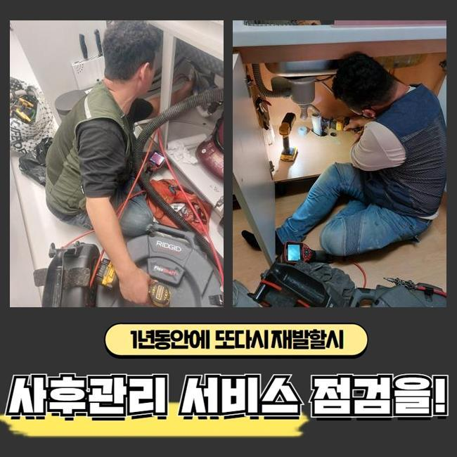
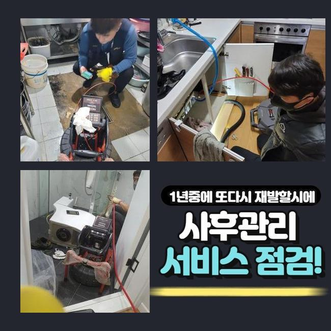
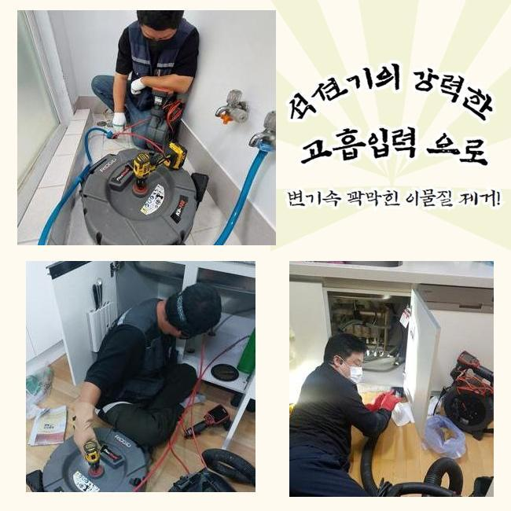
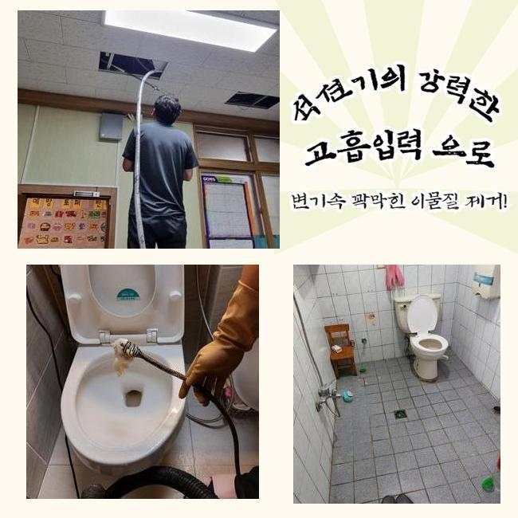
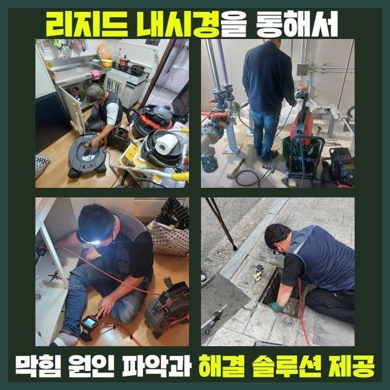
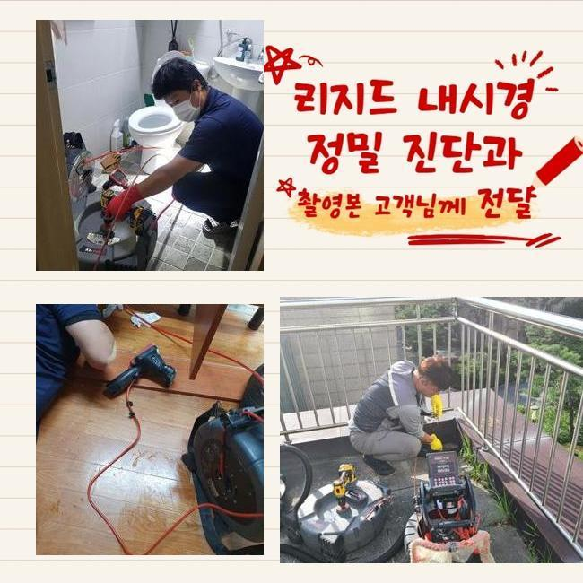

🏠 정왕4동싱크대막힘 능곡동 하수구청소장비 출장설비
용인 싱크대막힘 전문 시공 후기

📋 작업 개요
- 위치: 용인
- 서비스 유형: 싱크대막힘, 하수구막힘, 배관막힘, 누수수리, 역류해결, 뚫는업체, 배관청소, 설비공사, 악취차단
- 작업 일시: 2025. 3. 12. 14:00
- 업체명: 하수구수사대 (010-5615-2118)
🔍 문제 상황
정왕4동싱크대막힘 능곡동 하수구청소장비 출장설비
하수구의 마비가 일어나는 사유는 굉장히 다양한데 끈적끈적한 슬러지들과 석회가 주요 이물질이라 지정할 수 있습니다
내부리모델링을 하고 물 막힘이나 물 역류가 나타난다면 시멘트나 석조 등을 원인으로 가늠을 해보는 게 정답율이 높을 거에요
오늘의 현장에서도 클리닝을 하는 도중에 찌꺼기들을 관로에서 목격하게 되었습니다
주거지에서 수로 막힘이 가볍게 나타난다면 인근의 세대까지 물피해가 발생할 수 있으니 빠르게 근본원인을 빼내야 합니다
엎친데 덮친격으로 상가건물일 때는 금전적인 부분과 이어진 부분이기 때문에 더욱 신속 깔끔한 처리를 해드려야 합니다
오늘 방문드린 곳은 상가 개선을 위한 인테리어시공이 있은 후부터 하수구가 이상해져서 난감하셨다고 합니다
보통 인테리어 공사 이후 파편이나 도구들을 말끔하게 정돈하지 않거나 그냥 물로 씻어 없앤다면 방해물이 될 수 있습니다
수많은 사유들로 배관이 고장나기도 하므로 경우의 수를 넓게 열어두고 철저한 작업 준비를 마치고 하수문제가 있는 건물로 향했습니다
고객님과 인사를 드리고 주변을 둘러보니 세면대 바닥에 설치된 하수구 구멍에서 물막힘이 일어난 것 같더군요
석션 장치로 근처의 이물질을 1차적으로 제거 후 파이프 안의 하수 싹 빨아당겨주었습니다
물뿐만이 아니라서 석션 장비만으로는 완수를 할 수는 없었지만 다음 작업을 위해서라도 뿌연 하수를 사라지게 만들어야 했습니다

🔎 원인 분석
💡 전문가 진단: 정밀 진단 장비를 사용하여 슬러지의 고착 여부를 판명하고 타격/세척 작업을 실시했습니다.
하수관 기능을 복원하려면 전문적인 뚫는 장치들이 필히 동원되어야 합니다
우선은 흡입을 위한 석션과 샤프트 기기는 필수이고 배관 안을 확실하게 조사하고자 한다면 내시경도 작동시켜야 하는 부분입니다
직경이 크다거나 옥외배관과 이어져있다면 힘이 뛰어난 고압청소기까지 추가할 수 있어서 항상 탑재하고서 현장으로 향합니다
요즘은 여러 차원의 장치들이 점점 뛰어나게 변하니 하수를 정상화하는 단계가 그리 곤란하지 않아요
허나 작업자가 기술력이 미흡하면 장비가 뛰어나다고 해도 쓰기 힘들 수 있어요
명확한 원인 분석 없이 세기조절없이 장치를 쓴다면 하수구의 파손까지 연결될 수 있는 부분이니 노즐에 달린 내시경 기기로 배관 속을 투명하게 밝혀보고 안전하게 본 청소작업을 착수하는 게 바람직합니다
내부에 찰랑대던 물을 제거하고 배관 내시경을 켜서 배관 속으로 쑥쑥 밀어넣어서 상황 분석을 해보았습니다
이리저리 자리를 옮겨가며 확인해보니 관로에 토사물이나 비닐조각같은 물질들이 빈틈없이 자리하여 통수가 차단되는 현상을 알아차릴 수 있었습니다
내부 타일공사나 인테리어 등의 작업을 받았다면 배관으로 이물질이 폐기되지 않도록 한곳으로 쓸어서 청소를 담당해야 합니다
내시경 화면을 체크하니 규모가 큰 뭉치가 발견됐는데 시공을 하는 과정에서 일부 백시멘트가 진입되었고 덩어리화가 된 것을 추론할 수 있었습니다
공사 과정에서 일부러 백시멘트를 방출한 듯 했습니다
약간의 틈만 보이는 상태라서 막힘이 심해보였습니다

🔧 작업 과정
내시경으로 안쪽을 계속 체크하며 갈아내는 작업을 담당해서 다치지 않게 해주었어요
샤프트기기를 활용하여 거대한 슬러지를 파편화해서 말끔히 정리해보려 계획세웠습니다
작은 파편들을 석션기로 흡입을 해보았는데 거대한 뭉치가 튀어올라왔어요
쉼 없이 해체와 석션 작업을 임했건만 말라붙은 시멘트가 단단하게 벽체에 붙어서 하수구 공사까지도 해야하는 심각한 상황으로 몸소 느끼게 됐습니다
샤프트만으로는 깔끔한 성과를 내지 못할 듯 하여 배관 자체에 충격을 주는 업무를 강행하다가 파이프가 아예 부러져버릴까 걱정됐습니다
일단 바닥부를 해체해서 배관의 실물을 보고서 처리해주어야 할 듯 했습니다
다시 매끄럽게 복구해드리겠다고 전달드린 후 굴착했습니다
눈으로 보니 백시멘트가 누적돼서 파이프라인이 봉인되었던 것이었습니다
바닥부 공사 이후에 쓸려간 시멘트 분진이 덩어리화가 된 것입니다
흔히 사용하는 백시멘트는 건조가 빠르기 때문에 배관 어딘가를 틀어막는 현상들이 현장을 다녀보면 쉽게 감지되는 사안입니다
잘라낸 배관을 깨끗한 신규 자재로 이어주었습니다
하수관 일부를 절단할 때도 절단면이 고르게 분리해줘야 하며 갈아준 부위에도 틈새가 형성되지 않게 촘촘히 연결합니다
연결부를 이격이 일절 없도록 완료하지 않으면 조금씩 떨어지기 시작하거나 쩍 벌어져서 결국 누수로 불씨가 확대될 수 있습니다
배관이 흔들흔들하거나 탈거되는 일이 없도록 꼼꼼히 하수구 연결업무를 했습니다
샤프트로 분해한 찌꺼기들이 엄청난 양이 나왔습니다
제각각 다른 오염원들이 좁은 직경에 꽉 들어차서 통수불능은 당연한 처사였어요
하수가 정상적으로 이동하는지 수돗물을 콸콸 틀어서 폐기하여 경과를 보는 통수 테스트를 실시했는데요
이제는 물이 범람하는 고질적인 문제들이 싹 사라진 것까지 확인하고서 미장 공사로 보기좋게 마무리했어요
시멘트 회반죽을 충분하게 채워넣어서 배관을 딱 붙게 만들고 울퉁불퉁한 면이 없도록 최종마감을 해줍니다


✅ 작업 완료
추가로 백시멘트로 방수층을 조성해주고 원래대로 타일을 각 맞춰서 접착합니다
하수구를 손 본 이후에 철거했던 바닥부에 방수 코팅을 하지 않으면 아래 이웃에게도 물기가 일어나는 격이니 작업 후의 복원단계도 신경써서 담당해 드려야 합니다
작업한 마감재가 굳을 때 까지 밟거나 이용하는 활동을 자제할 것을 당부드린 후에 어려움을 겪던 하수구 시공을 완성하게 됐습니다
하수관이 마비되는 상황은 다양한데 이번처럼 욕실 배수구 쪽의 문제도 자주 생기기에 관련 문의들을 셀 수 없이 해주고 계십니다
상시 대기 중이므로 전화만 주신다면 막혀서 정체된 하수관의 흐름을 깔끔하게 해결해드리겠습니다




⚠️ 베란다 누수 및 방수 관리 방법
- ✅ 비가 많이 올 때 창틀 주변이나 아래층 천장에 얼룩이 생기는지 정기적으로 확인해 보세요.
- ✅ 우수관 주변 실리콘 마감이 들뜨거나 깨진 틈새가 있는지 손상 여부를 수시로 체크하세요.
- ✅ 베란다 바닥 타일의 줄눈(메지)이 소실되면 그 틈으로 물이 침투하여 누수가 유발됩니다.
- ✅ 누수 의심 증상 발견 시 방치하면 아래층 손실이 커지므로 즉시 전문가의 진단을 받으십시오.
💡 핵심 정리
- 확실한 장비 작업(내시경 점검 및 샤프트 스케일링)으로 원인을 뿌리 뽑습니다.
- 작업 후 1년 이내에 동일한 부위 재발 시 100% 무상 A/S 서비스를 보장합니다.
- 서울 · 경기 · 인천 전 지역에 24시간 언제든 긴급 출동할 수 있도록 항시 대기 중입니다.
❓ 자주 묻는 질문 (FAQ)
🚨 용인 싱크대막힘 문제로 고민이신가요?
정확한 원인 진단과 확실한 시공으로 재발 없는 해결을 약속드립니다.
24시간 긴급 출동 | 서울 · 경기 · 인천 전지역 | 1년 내 재발 시 무상 A/S